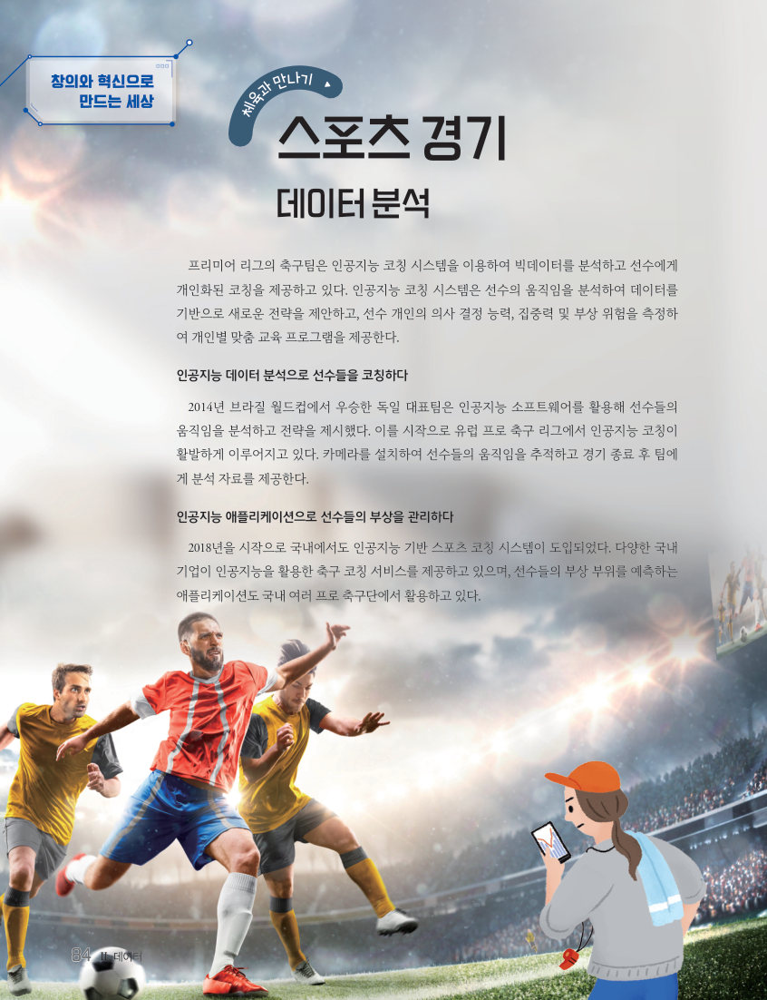

데이터 분석과
의미 해석하기
스포츠 팀은 데이터로 선수를 코칭하고 부상을 막는다. 이번에는 인기 SNS 상위 200 영향력자 데이터를 직접 정렬하고 그래프로 나타내어, 게시물 수·팔로워 수·좋아요 수·참여율 사이의 관계를 해석하고 Ⅱ단원을 마무리하자.
프리미어 리그의 축구팀은 인공지능 코칭 시스템을 이용하여 빅데이터를 분석하고 선수에게 개인화된 코칭을 제공하고 있다. 인공지능 코칭 시스템은 선수의 움직임을 분석하여 데이터를 기반으로 새로운 전략을 제안하고, 선수 개인의 의사 결정 능력, 집중력 및 부상 위험을 측정하여 개인별 맞춤 교육 프로그램을 제공한다.
2014년 브라질 월드컵에서 우승한 독일 대표팀은 인공지능 소프트웨어를 활용해 선수들의 움직임을 분석하고 전략을 제시했다. 카메라를 설치하여 선수들의 움직임을 추적하고 경기 종료 후 팀에게 분석 자료를 제공한다. 2018년을 시작으로 국내에서도 인공지능 기반 스포츠 코칭 시스템이 도입되었고, 선수들의 부상 부위를 예측하는 애플리케이션도 여러 프로 축구단에서 활용하고 있다.
캐글(kaggle.com)에서 ‘top accounts data’를 검색하여 내려받은 ‘인기 SNS 상위 200인 영향력자(influencer)’ 데이터셋이다. 속성 이름은 rank: 순위, name: 계정 이름, channel_info: 계정 정보, category: 범주, posts: 게시물 수, followers: 팔로워 수, avg_likes: 평균 좋아요 수, eng rate(%): 참여율로 바꾸어 두었다.
| 게시물 수가 가장 많은 계정 이름 | |
| 그 계정의 계정 정보 / 범주 | |
| 팔로워 수가 두 번째로 많은 계정 이름과 팔로워 수(M) | M |
| 평균 좋아요 수가 네 번째로 많은 계정 이름 | |
| 참여율이 10 % 이상인 계정의 개수 | 개 |
| 개인 계정(male, female)의 개수가 단체나 커뮤니티 계정(brand, community)보다 월등히 많다. | |
| 범주 중 entertainment 분야가 빈도수가 가장 많고, 평균 좋아요 수도 가장 많다. | |
| 게시물 수가 많을수록 팔로워 수와 평균 좋아요 수 모두 밀접하게 증가한다. |
| 데이터를 분석할 때는 빈 값이나 잘못 입력된 값이 없는지 먼저 살펴보아야 한다. | |
| 평균은 개수가 적은 집단일수록 더 믿을 만하다. |
| 평가 기준 | 스스로 평가 |
|---|---|
| 지식·이해 응용 소프트웨어를 이용하여 문제 해결에 필요한 데이터 분석을 수행할 수 있는가? | |
| 가치·태도 데이터에 기반하여 객관적으로 문제에 답하고, 종합적으로 의미를 해석할 수 있는가? | |
| 디지털 문화 소양 데이터의 수집과 분석을 통해 융합적인 문제 해결 활동을 수행할 수 있는가? |